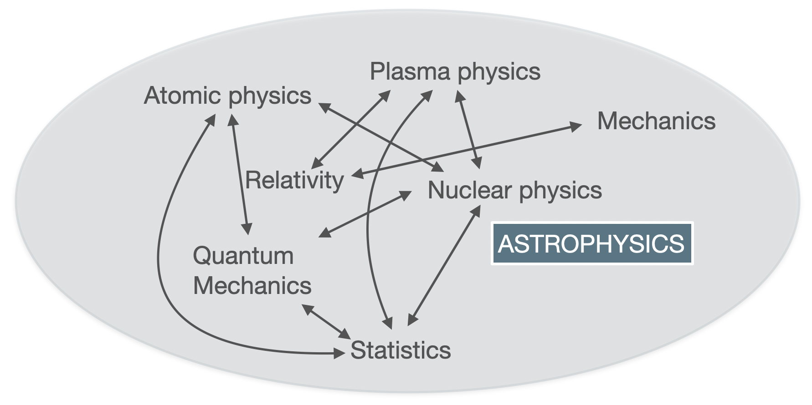
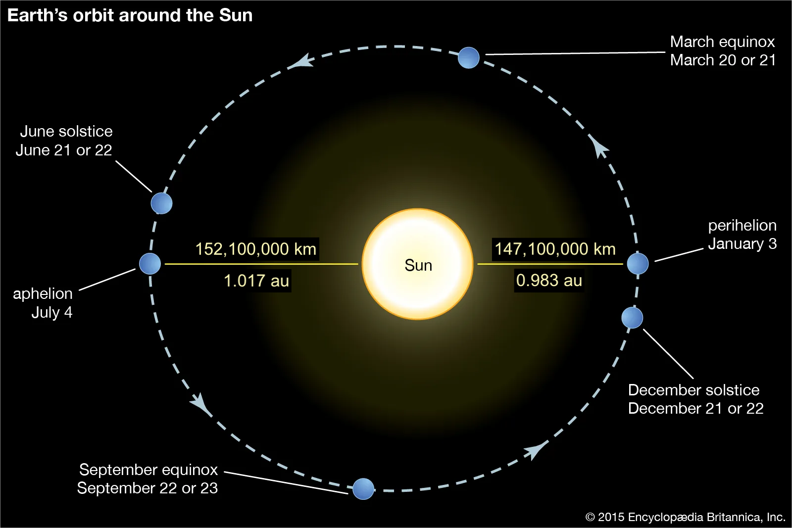

References
Preface
This is a set of Stellar Physics notes for the Astronomy 1 course at the University of Glasgow (2023/2024).
Recommended textbook for this course: - “An introduction to Modern Astrophysics”, Carroll & Ostlie, 2nd edition
The slides are for guidance and are not sufficient for studying. You are supposed to read the notes, complementing them with your own notes taken during the lectures and the book.
Introduction
Astronomy is a observational science. We cannot bring a star down to Earth to study it in the laboratory. Unlike other branches of Physics, we cannot experiment directly on stars and what happens in the universe is beyond our control, but we can use our knowledge of Physics to make predictions and we can use observations to validate our theories. This can allow us to answer many questions about the stars. Some of these questions date back to the most ancient times, and through history have inspired philosophers and scientists to develop our understanding of the cosmos. This interplay between Astronomy and Physics is today called Astrophysics, which has grown to encompass phenomena from planets to galaxies to the evolution of the universe.
Astrophysics is very multidisciplinary

Astrophysics is very multidisciplinary because of ‘several effects’ that come into play in the physics of stars, galaxies, the universe… it is an ‘arena’ of different fields of physics (but also mathematics and chemistry), spanning across classical mechanics, relativity, nuclear and particle physics, statistics, atomic and molecular physics, plasma physics, quantum mechanics and more (the list above and in the picture is not exhaustive)! In this course you will see how some of these fields play a role in the physics of stars.
Lecture 1 - Stellar properties
Astrophysics is very multidisciplinary
Astrophysics is very multidisciplinary because of ‘several effects’ that come into play in the physics of stars, galaxies, the universe… it is an ‘arena’ of different fields of physics (but also mathematics and chemistry), spanning across classical mechanics, relativity, nuclear and particle physics, statistics, atomic and molecular physics, plasma physics, quantum mechanics and more (the list above and in the picture is not exhaustive)! In this course you will see how some of these fields play a role in the physics of stars.
Look at the night sky, what do we see?
Let’s start with some simple observations of the night sky… “Look at the night sky, what do we see?” Here in Scotland, the answer to this questions is likely ‘clouds’, but if you are curious to know what is beyond those clouds, you can check out Stellarium (you can download it or you can use the web version: https://stellarium-web.org/).
All that glitters is not (only) stars!

Looking at the night sky we may be able to see planets, meteors, galaxies, satellites, comets, star clusters and many stars!

2. What is a star?
A star is an astronomical spheroid body: - held together by self-gravity - radiating energy from an internal source (tipycally from nuclear fusion reactions, and occasionally from the release of gravitational potential energy during contraction or collapse)
Having this definition you should be able to answer this question: “is the Death Star a (fictional) star”?
The answer is “no”, because it does not radiate energy! The Death Star is actually a (fictional) space station orbiting the (fictional) planet moon of Endor. Enough with the fictional stuff now.
If you look at the sky you may see that planets and comets are also shining in the sky, so why can’t they be considered stars, based on the definition given above? Do they radiate energy? Are they self-gravitating?
Planets actually do not radiate, they mostly reflect the light coming from the Sun, and the same holds for comets. In addition to that, comets do not have enough mass to be considered self-gravitating objects.
2.1. Life and death of a star
A star is not a static object. During its life it will evolve, changing its internal structure and chemical composition as it ‘burns its fuel’ and changing its mass and size, eventually resulting in its death when one of the conditions that define a star is no longer valid, i.e. when the star is no longer self-gravitating or when it stops radiating having exhausted its nuclear fuel. We will talk more about the evolution of stars in the following lectures. Now let’s go back to what we can observe having a look at the night sky and let’s see what we can tell from observations of stars.
2.2. Do all stars look the same?

- There are a lot of stars, not uniformly distributed
- Some look brighter than others
- Some are bigger than others
- They have different colours
- Sometimes there are coloured or dark areas around stars
- Some stars have fluctuating brightness: repeating and irregular
2.3. A comparison between two stars on Stellarium
Let’s check the properties of two stars on Stellarium. What can you notice after a first look at these stars? You may notice that they have different colours (one looks white, the other one looks white-blue). The boxes contain some information about these stars, and you may recognise many of these fields in the blue boxes from positional astronomy. We will find out what the properties in the red boxes mean during this course.

2.4. What can we tell from observations?
- How distant are the stars?
- How big are they?
- How bright?
- How, when and where do they form?
- What are their most important characteristics?
- What are they made of?
- What is their energy source?
- What happens when it runs out?
3. How distant are the stars?
3.1. An easy case: the distance to the Sun
How do we find the distance to the Sun?
Easy! - Just define The Astronomical Unit (a.u.) as the average distance between the Earth and the Sun!
3.2. The astronomical unit
Ok, but how big is an au? In 1976 the International Astronomical Union (IAU) adopted a standard definition whose value has been updated with increasing precision during the years. At the current date, the astronomical unit is: - 1 a.u. = 149,597,870,700 m
3.2.1. Question
Can you now work out how long it takes for the sunlight to reach Earth?
Time taken by light to reach Earth from the Sun = 499.0 s = 8.317 min = 8' 19'' 3.2.2. A remark on the Astronomical Unit
Note: 1 a.u. is an average distance, because the distance between the Earth and the Sun varies during the year.

Distance Earth-Sun at aphelion (most distant) = 1.521e+08 km = 1.017 au
Distance Earth-Sun at perihelion (closest) = 1.471e+08 km = 0.983 au
Average distance Earth-Sun = 1.496e+08 km = 1 auReferences
Summary
In summary, this book has no content whatsoever.